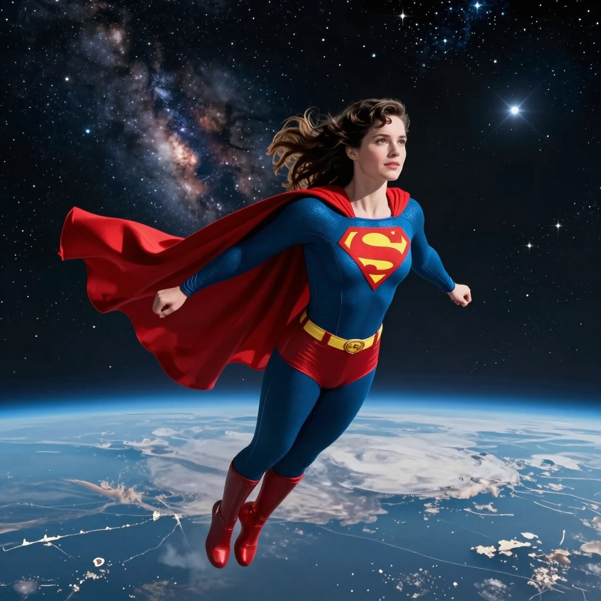

我是王妡羽 1152028
以上是我的原圖

以上是生成的圖(正提示)

生成過程 指令:A cinematic photo of the female student from the original image soaring through space, wearing a classic Superman suit with a red cape. Deep space background with stars, nebulae, and Earth below. Epic lighting, high quality.
以上是生成的圖(負提示)

生成過程 指令:讓照片模糊
心得:覺得很有趣 之前只會用ChatGPT 生成圖片 或是其他需要token的生成圖片程式 第一次接觸comfyUI 過程發現用英文指令比較準 但是反提示只是要他增加模糊感 一直改圖 感覺還需要跟他磨合一下